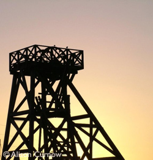

Geevor Tin Mine
- Geevor Tin Mine (01736 788662)
Pendeen, Penzance, TR19 7EW
Find them on Google Maps
www.geevor.com
What is is? - Geevor was the last working tin mine in West Penwith closing in 1990. Situated in a spectacular setting on cliffs above the Atlantic Ocean, the workings eventually stretched far out under the sea. Geevor is now the largest mining history site in the UK where visitors can follow the story of the mining and processing of tin.
The museum houses a unique collection of mining artifacts, mineral displays and photographs of the mine and miners at work. The surface buildings house the magnificent winders and compressors. Exploration of the underground mines is via guided tours on the hour year round.
Where is it? - Geevor Tin Mine, situated in the village of Pendeen on the B3306 road between St. Ives and Lands End. From Penzance - From the A30 Penzance bypass take the main road to St Just (A3071). Follow the brown signs indicating ‘Historic Mining Area’. Continue along the A3071 and fork right on the B3318 to Pendeen. Turn left at the cross roads to drive through Pendeen and turn right at the Geevor main entrance.
Be green and take the bus to Geevor, present it at reception and get 10% off your entrance fee. Take the number 17 from Penzance bus station and ask for Geevor tin mine.
When is it open? - Geevor tin mine is open all year round apart from a few days either side of Christmas. Contact them for more information on Christmas opening times.
- Summer - Easter to October - 9am to 5pm - last admission at 4pm
- Winter - 10am to 4pm - last admission at 3pm
Closed saturdays all year round.
Why should I/we go? - Geevor tin mine gives you a glimpse into Penwith and Cornwall's mining heritage. Interesting day out with a unique tour of real underground mine tunnels.